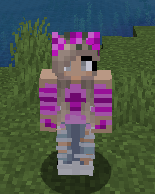

Sookie's Top 5 Hobbies
Hi! My name is Sofija, but Sookie is my online (gaming) alter ego. You guessed it, gaming is one of my big interests. If you want to know more about me, read on!
Toplist of my favourite pastimes
I believe I am a textbook example of a geek. My top choices will not come as a surprise.
Reading epic fantasy novels
My passion for epic fantasy books started when I firs watched the LOTR: Fellowship of the Ring movie. I was in middle school back then. My parents told me there was a book. By the time the second movie was out, I had most of Tolkien's bibliography under my belt.

My favourite book series
The Lord of the Rings Dragon Riders of Pern The Wheel of Time (I-III) - The Fellowship of the Ring
- The Two Towers
- The Return of the King
- Dragonflight
- Dragonquest
- The White Dragon
- The Eye of the World
- The Great Hunt
- The Dragon Reborn
J. R. R. Tolkien Anne McCaffrey Robert Jordan Nature hikes
Most of the time, I am a house mouse. From time to time, I do love to go out on a hike, see, hear and smell some amazing nature. I can also pretend I'm a hero on a quest.
Interior design
As I mentioned above, house mouse here! So I love me some amazing, comfy and beautiful space. I can spend hours researhing ideas or browsing through furniture stores. Then I hop on to RoomSketcher. Sometimes it remains an idea and sometimes I end up redecorating my home.
Online games
I have a group of friends that I play with. We live in different countries and don't get to see each other much. This is how we stay connected, have tons of fun and go through hard times. Our go to game is League of Legends, but we have a lot of hours in Minecraft too.
Cooking
I was considering to put this one at the top. I love to make my version of everything that I see in a restaurant, Starbucks, on a TV. I always search for new recepies and rarely make things twice, even though they are delicious. How can I, when there is so many new things to try?
I most enjoy my hobbies when I share them with my family and friends. My little girl is almost two and really excited about cooking. We all love playing and making things together.